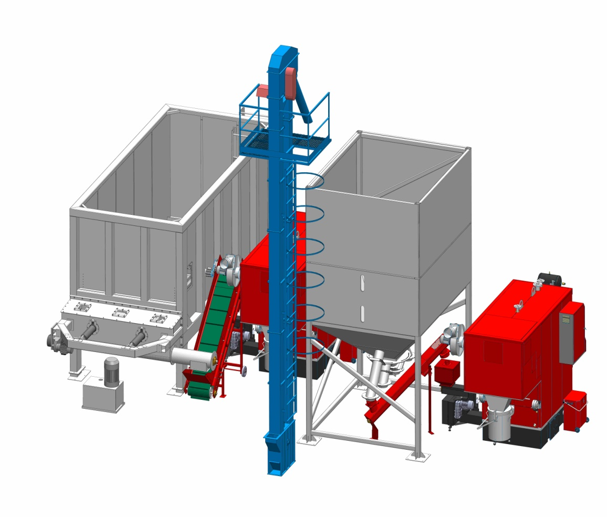
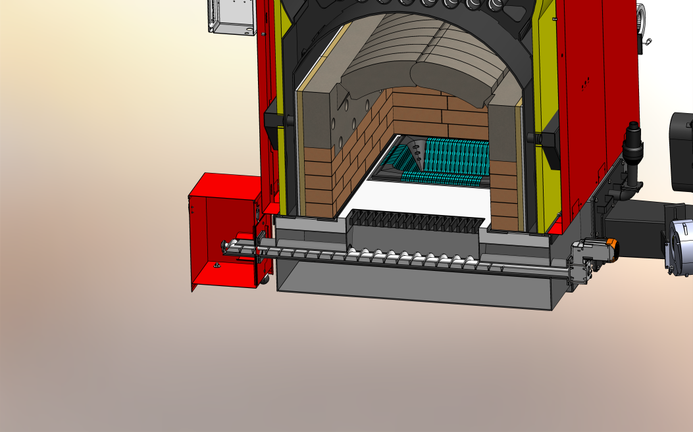

350+ zaposlenih i tim od 40 diplomiranih masinskih inzenjera.
Industrijski katalog
Radijator Inzenjering
Industrijski kotlovi na biomasu, automatizovana kotlovska resenja i sistemi za objekte koji traze stabilno, efikasno i dugotrajno grejanje.
15 - 500 kW
Opseg resenja za razlicite objekte
35+ godina
Iskustvo u razvoju i proizvodnji kotlova
ISO 9001:2008
Potvrda sistema kvaliteta i procesa
O kompaniji
Domaci proizvodjac sa ozbiljnom proizvodnjom i inzenjerskom bazom.
Kompanija je nastala iz tradicije koja pocinje 1991. godine, dok prvi toplovodni kotao na cvrsto gorivo datira jos iz 1985. Danas Radijator Inzenjering objedinjuje projektovanje, proizvodnju i razvoj kotlova koji greju hiljade objekata sirom Evrope.
Proizvodnja se oslanja na savremene procese poput laserskog secenja, CNC plazme, CNC probijanja i robotskog zavarivanja, sa fokusom na preciznost, dug vek trajanja i dosledan kvalitet.
Proizvodnja uskladjena sa vazecim evropskim standardima.
Sistemska podrska kroz ceo zivotni vek sistema grejanja.
Proizvodni program
Tri jasno definisana pravca za industrijske sisteme grejanja.
60 - 300 kW
TKAN serija
Toplovodni kotlovi na pelet sa automatskim nalaganjem, projektovani za visok stepen iskoriscenja, pouzdan rad i mogucnost lozenja drveta uz rucno punjenje.
80 - 500 kW
TKAN Integra
Nova generacija industrijskih kotlova sa zidanim lozistem, automatskim ciscenjem, naprednom automatikom i multiciklonom za cistiji i stabilniji rad.
Modularna snaga
Kaskadna resenja
Povezivanje dva ili vise kotlova u jedinstven sistem sa zajednickim silosom, ravnomernim opterecenjem i visokim stepenom energetske efikasnosti.
Sistemsko resenje
Kotlarnica kao kompletan projektovan sistem.
Kod vecih objekata snaga kotla je samo jedan deo resenja. Kaskadno povezivanje, centralni silos, elevator, puzni transporteri i bafer rezervoar rade zajedno da sistem dobije stabilnu isporuku energije i uredno snabdevanje peletom.

Serija TKAN
Industrijska pouzdanost za pelet, uz fleksibilnost za drvo.
TKAN je razvijen kao kotao izrazito prilagodjen biomasi, sa cevnim izmenjivacem toplote, produzenim putem dimnih gasova i turbulatorima koji dodatno podizu iskoriscenje sistema.
Stepen korisnosti na pelet preko 90%.
Kotlovski limovi od 5 mm i vise, besavne cevi ST 35.4.
Temperatura dimnih gasova oko 160 C u normalnom rezimu.
Automatsko doziranje peleta puznim transporterima.
Serija TKAN Integra
Naprednija automatizacija, cistije sagorevanje i duzi radni vek.
Integra model donosi zidano loziste, bogatiju standardnu opremu i sistem automatskog ciscenja koji smanjuje servisna opterecenja i odrzava visok stepen energetske efikasnosti.
Zidano loziste za potpuno i stabilno sagorevanje.
Automatsko ciscenje izmenjivaca komprimovanim vazduhom.
Multiciklon sa centrifugalnim ventilatorom kod jacih modela.
Manje emisije prasine i manja potreba za rucnim odrzavanjem.
Poredjenje modela
Brz pregled kada birati TKAN, a kada TKAN Integra.
| Karakteristika | TKAN | TKAN Integra |
|---|---|---|
| Opseg snage | 60 - 300 kW | 80 - 500 kW |
| Primarna namena | Industrijsko grejanje na pelet uz mogucnost rucnog lozenja drveta. | Veci sistemi koji traze visi nivo automatizacije i opreme. |
| Loziste | Izviruce loziste sa puznim transportom goriva. | Zidano loziste za stabilnije sagorevanje i zastitu celicnih delova. |
| Ciscenje | Automatsko izbacivanje pepela iz prostora lozista u odredjenim konfiguracijama. | Automatsko ciscenje lozista i pneumatsko ciscenje cevnog izmenjivaca. |
| Emisije prasine | Mogucnost dodavanja ciklona kod sistema sa pneumatskim ciscenjem. | Multiciklon sa centrifugalnim ventilatorom kod jacih modela. |
Kaskadni sistemi
Modularna arhitektura za velike objekte i neprekidan rad.
Povezivanjem vise TKAN kotlova dobija se fleksibilan sistem koji precizno odgovara stvarnom opterecenju objekta, uz hidraulicnu skretnicu, bafer i centralizovano upravljanje.
Pokrivanje velikih snaga za hotele, hale i stambene komplekse.
Optimizovan rad u prelaznim periodima uz paljenje po potrebi.
Kontinuitet rada sistema i tokom servisa jednog od kotlova.
Centralno snabdevanje peletom i sinhronizovana automatika.
Dodatna oprema
Kompletan ekosistem za skladistenje, transport i kontrolu peleta.

Centralni transport peleta
Veliki silos, elevator i puzni transporteri omogucavaju automatsko dopunjavanje dnevnog silosa bez stalnog rucnog rada.

Ciscenje i sagorevanje
Automatsko izbacivanje pepela i pneumatsko ciscenje izmenjivaca smanjuju servisna opterecenja i pomazu da efikasnost ostane stabilna tokom rada.

Silos po potrebi objekta
Za vece sisteme predvidjaju se spoljni silosi posebnih dimenzija, uz sonde minimuma i maksimuma za automatsku dopremu goriva.
GitHub Pages + PDF
Jedna staticka prezentacija, spremna za web i PDF.
Ova verzija je pripremljena za GitHub Pages i za cist izvoz kroz browser opciju Print / Save as PDF.